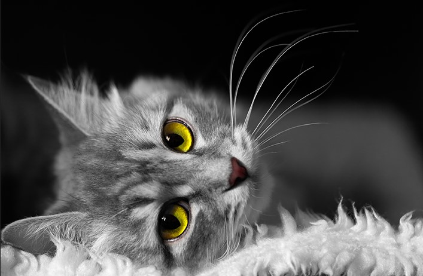

Gato Cinza

Empresas onde já trabalhou:
- Caça Pombo Dois Irmãos
- Novela Dez Mandamentos
- Filme Gato de Botas
Habilidades/Especialidades:
- Sabe Interpretar um Gato
- Magico Ilusionista(faz as coisas sumirem)
- Caçador de Pombo
Voltar para Trabalhos dos gatos conforme a cor do pêlo